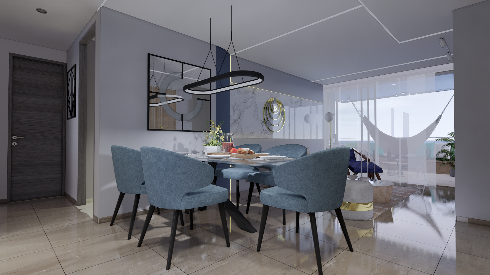
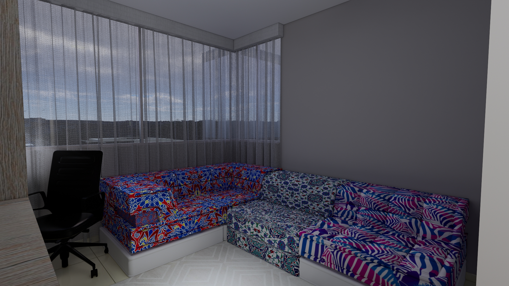
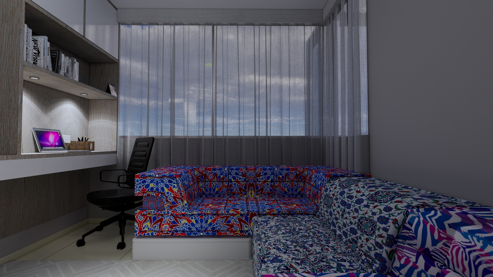
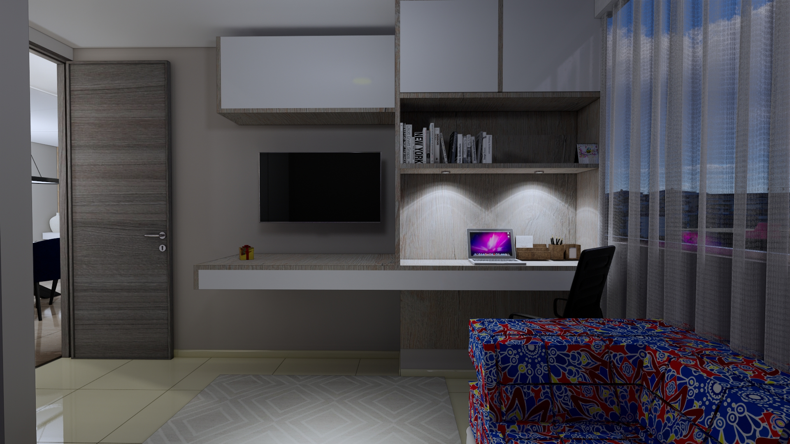
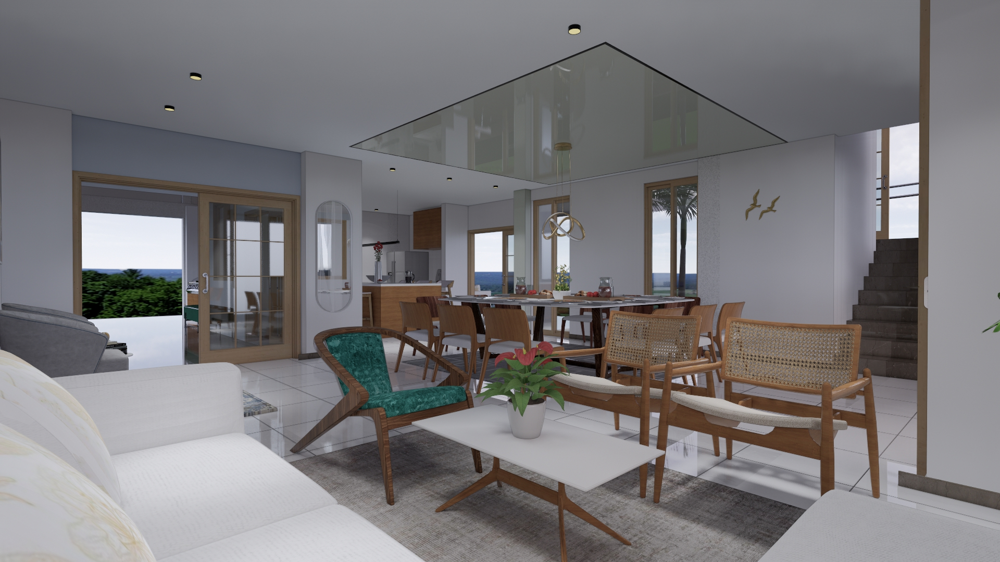
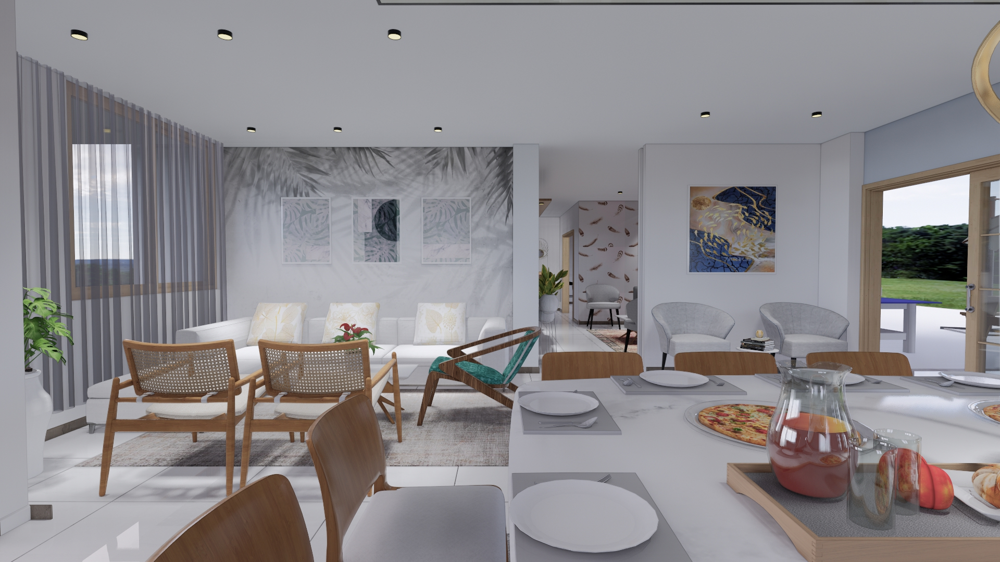

Diseño de Interiores · Bucaramanga · 2020
Dos proyectos del mismo año, la misma ciudad, el mismo programa — y dos lenguajes radicalmente distintos. Índigo apuesta por la elegancia fría del mármol y el dorado; Galeno por la calidez orgánica de la madera y el ratán. Juntos, ilustran la versatilidad de una práctica que no tiene un solo estilo, sino una sola exigencia: que el espacio responda a quien lo habita.
Mármol blanco con retroiluminación dorada, sillas tapizadas en azul polvoso, silla Z en terciopelo navy — un apartamento que traduce la elegancia italiana contemporánea al clima y al carácter de Bucaramanga. La paleta fría se calienta con los detalles dorados y la iluminación indirecta estratificada.





Diseñado para un médico, Galeno abraza la calidez de la madera natural, el ratán y la luz que entra por todas partes. El techo de cristal sobre el comedor y las vistas al verde crean un interior que respira hacia afuera. Un espacio de descanso y reposición — exactamente lo que quien cuida a los demás necesita al llegar a casa.


Índigo y Galeno nacieron el mismo año, en la misma ciudad, con el mismo programa. Que sean opuestos no es una contradicción — es una posición: el diseño de interiores que practica LIRA no impone un lenguaje prefabricado, sino que escucha al cliente, al espacio y al lugar, y construye desde ahí. La elegancia fría de uno y la calidez orgánica del otro son respuestas igualmente válidas a preguntas distintas.